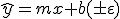

Regression and the line
A common case is simple linear regression where both the dependent and independent are continuous variables and the relationship is linear, that is to say the dependent values are a linear combination of the independent variables and any constant parameters. So, the relationship is expressed for example in the equation for a line

where m is one coefficient, b another and the bracketed term is error or noise. I bracket this last term because we will not include it in our model. You can read about the properties of the error term on this wikibook page that introduces the linear regression model.
It is sometimes easy to forget that the slope coefficient is the rate of change of the conditional mean, the expected value of y rather than the rate of change in the response variable itself.
In general, then the coefficients of the equation are
| m | the slope or gradient of the line |
| b | the intercept or the average value of y when x is zero |
Visualising the relationship
This is a scatter plot of one continuous variable (students' scores on a history exam) plotted against another (students' scores on an English exam).

As we look at this graph, we can imagine trying to fit a straight line through the observed data points. Of course, there are a number of candidate lines. For the purposes of simple linear regression, we choose as the best line the one that minimizes the squares of the residuals where a residual is the difference between the value on the line at some value of x and the observed value of y at that point. This line is a candidate for the best fit of a straight line through the data. Here is the fitted line

What does it mean?
Intuitively, this line looks like a good fit. The data points are mostly quite closely clustered around the line with a small number of larger residuals. We could probably estimate the slope of the line - it looks to be close to one at a first approximation.
However, you will need to
- calculate the coefficients more accurately
- demonstrate that the relationship represented by the slope coefficient is significant
The first issue is dealt with by using the least squares method to find the line of best fit through the data and then calculating the slope of that line as  .
.
The second is dealt with by calculating a t statistic for the slope and finding p(t).
Fortunately, R will do all this for us.
Linear Regression with R
First, you should watch this short video tutorial on linear regression with R.
The commands that we need to carry out the regression analysis are
cor(x,y)
lm(dependent_variable, independent_variable)
plot(independent_variable, dependent_variable)
abline(model)
summary(mod)
anova(mod)
Supplementary reading
If you would like to read a description of the regression procedure in R there is one at R Bloggers.